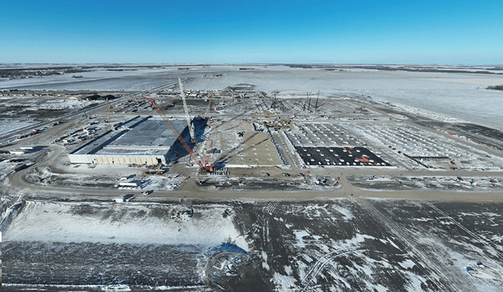

Nebenwert im Fokus ·
Vom Bitcoin-Miner zum Vermieter der KI: Warum diese Aktien am Freitag 18 Prozent verloren
Sechs ehemalige Krypto-Schürfer vermieten heute Rechenleistung an KI-Firmen. Sie haben Milliardenverträge, aber auch Milliardenschulden. Am Freitag fielen ihre Aktien stärker als fast alles andere. Die EZB warnt in ihrem Finanzstabilitätsbericht vor genau diesem Muster.
Redaktion Vision Universe · Stand 23.11.2026, 12:00 Uhr · 4 Min. Lesezeit

Sie hießen einmal Bitcoin-Schürfer. Heute vermieten sie Strom, Hallen und Grafikkarten an KI-Firmen. Und am Freitag standen sie ganz oben auf der Verliererliste: Nach unseren Daten verlor IREN 18,0 Prozent, Applied Digital 17,8, Hut 8 17,7, Cipher 16,0, Core Scientific 15,2 und TeraWulf 14,9 Prozent. Zum Vergleich: Der Nasdaq Composite fiel am selben Tag um 5,3 Prozent.
Der Grund liegt in der Bilanz. Diese Unternehmen bauen Rechenzentren auf Kredit und vermieten sie über viele Jahre. Das bringt lange Verträge, aber auch hohe Zinsen und wenig Spielraum, falls ein Mieter abspringt. Genau dieses Muster hat die Europäische Zentralbank am 18. November in ihrem Finanzstabilitätsbericht beschrieben: Der KI-Ausbau stütze sich zunehmend auf Schulden, das erhöhe das Risiko einer Neubewertung an den Anleihe- und Aktienmärkten.
Quelle: Vision Universe (Schlusskurse), Associated Press (Nasdaq)
Das Geschäftsmodell in einem Satz
Wer früher Bitcoin schürfte, hatte drei Dinge, die heute KI-Firmen suchen: Grundstücke, Stromanschlüsse und Erfahrung mit Kühlung. Also wurden aus Schürfern Vermieter. Sie bauen Hallen, stellen Rechner hinein und vermieten die Leistung über Verträge mit Laufzeiten von vielen Jahren. Laut dem von CoinShares ausgewerteten Zahlenwerk erwarten Analysten von Visible Alpha, dass 2026 rund 71 Prozent des Umsatzes bei IREN und Core Scientific und 70 Prozent bei TeraWulf aus diesem Geschäft stammen, nicht mehr aus dem Schürfen.
Die Auftragsbestände sind entsprechend groß. Core Scientific nennt laut 24/7 Wall St. mehr als 24 Milliarden Dollar vertraglich zugesagten Umsatz, TeraWulf 27 Milliarden. Das klingt nach Sicherheit, hängt aber an wenigen Mietern. Bei Applied Digital und Core Scientific steht laut dem Bericht vor allem der KI-Rechenzentrumsbetreiber CoreWeave auf der Kundenliste, dazu kam zuletzt der Chipkonzern AMD. Fällt ein solcher Mieter aus oder verschiebt er seinen Ausbau, trifft das sofort den ganzen Plan.
Milliardenverträge, Milliardenschulden
Dem Auftragsbestand stehen Schulden gegenüber. Applied Digital trägt laut 24/7 Wall St. rund 6,4 Milliarden Dollar Schulden gegenüber 3,7 Milliarden Dollar an Bargeld und gebundenen Mitteln; das Verhältnis von Schulden zu Eigenkapital liegt bei 2,86. Core Scientific hat 4,3 Milliarden Dollar langfristige Schulden und weist ein negatives Eigenkapital von 1,09 Milliarden aus. Bei TeraWulf nennt derselbe Bericht 3,4 Milliarden Dollar Nettoschulden, CoinShares kommt auf 5,7 Milliarden Dollar Gesamtschulden; der Unterschied ist die Verrechnung mit dem Kassenbestand.
Dazu kommen Wandelanleihen: 3,7 Milliarden Dollar bei IREN, 1,7 Milliarden Dollar besicherte Anleihen bei Cipher, so CoinShares. Wandelanleihen sind für Aktionäre doppelt unangenehm, weil sie Zinsen kosten und sich später in neue Aktien verwandeln können. Den Kern des Problems hat Core-Scientific-Chef Adam Sullivan laut 24/7 Wall St. selbst benannt: Kapital sei der Flaschenhals des Ausbaus. Wenn Geld teurer wird, wird langsamer gebaut.
unterschiedliche Abgrenzungen, deshalb nicht direkt vergleichbar · Quelle: 24/7 Wall St. (Applied Digital, Core Scientific), CoinShares (TeraWulf, IREN, Cipher)
„Dieser Sprung bei den Emissionen ist nun auf dem Weg, den Höchststand der Dotcom-Blase gemessen am US-Bruttoinlandsprodukt zu übertreffen.“
Europäische Zentralbank, Finanzstabilitätsbericht November 2026, über Aktienemissionen zur Finanzierung des KI-Booms (übersetzt)
Was die EZB daran stört
Der Finanzstabilitätsbericht der EZB vom 18. November widmet dem KI-Ausbau breiten Raum. Zwei Punkte sind für diese Unternehmen wichtig. Erstens die Finanzierung über die Börse: Die Welle neuer Aktien sei auf dem Weg, gemessen am US-Bruttoinlandsprodukt den Höchststand der Dotcom-Blase zu übertreffen, und solche Wellen fielen historisch oft mit Marktgipfeln zusammen. Zweitens die Schulden: Die wachsende Abhängigkeit von Krediten für den Infrastrukturausbau erhöhe das Risiko, dass Anleihen und Aktien neu bewertet werden.
Die EZB nennt keine einzelnen Firmen, und ihr Bericht ist eine Risikoabwägung, keine Prognose. Für die ehemaligen Schürfer beschreibt er trotzdem ziemlich genau die Lage: Geld von der Börse und von Gläubigern für Anlagen, deren Erträge erst in vielen Jahren kommen. Hinzu kommt bei ihnen ein zweiter Risikofaktor, den andere Rechenzentrumsbauer nicht haben: Ein Teil des Geschäfts hängt weiter am Bitcoin-Kurs.

Was unsere Daten zeigen
Applied Digital zeigt die Größenverhältnisse. Nach unseren Daten schloss die Aktie am Freitag bei 11,49 Dollar: 77 Prozent unter ihrem Hoch, 40 Prozent unter dem Stand von vor einem Monat und 50 Prozent unter dem von vor zwölf Monaten. Der Börsenwert liegt bei rund 3,3 Milliarden Dollar, also deutlich unter den Schulden, die 24/7 Wall St. mit 6,4 Milliarden Dollar angibt.
Beim Geschäft stehen Wachstum und Verlust nebeneinander: Der Umsatz der vergangenen zwölf Monate liegt bei rund 854 Millionen Dollar und hat sich damit fast vervierfacht, die Nettomarge ist mit minus 30 Prozent aber klar negativ. Ein Kurs-Gewinn-Verhältnis gibt es deshalb nicht; das Kurs-Umsatz-Verhältnis liegt bei 3,9. Unser Trendmodul steht auf negativ, die relative Stärke bei 14 von 100. Unter den acht großen Fonds, deren Meldungen wir zum dritten Quartal auswerten, stieg Viking Global neu ein, während vier Adressen ihre Anteile ganz verkauften.
Worauf es jetzt ankommt
Drei Dinge entscheiden in den nächsten Monaten über diese Aktien, und alle drei lassen sich beobachten. Erstens die Mieter: Bleiben die großen KI-Kunden bei ihren Zusagen oder verschieben sie Ausbaustufen? Zweitens die Finanzierung: Zu welchen Zinsen bekommen die Firmen frisches Geld, und wie viele neue Aktien entstehen dabei? Drittens der Bau selbst: Werden Hallen und Stromanschlüsse rechtzeitig fertig, damit die Verträge überhaupt Umsatz bringen?
Die Kurse haben einen Teil dieser Fragen schon beantwortet, zumindest in ihrer Bewertung: Applied Digital liegt nach unseren Daten rund 50 Prozent unter dem Stand von vor zwölf Monaten und laut 24/7 Wall St. ebenfalls rund 50 Prozent unter dem Jahresanfang. Unsere Module zeigen für diese Werte durchweg einen negativen Trend bei sehr hoher Schwankung. Der Artikel ist keine Empfehlung, sondern eine Einordnung. In der App lässt sich zu jeder dieser Aktien verfolgen, wie Kurs, Bewertung und Geschäftszahlen zusammenpassen.
Termine
- 18.11.2026EZB: Finanzstabilitätsbericht November 2026
- 20.11.2026KI-Rechenzentrumswerte fallen zweistellig
Quellen
- Europäische Zentralbank: Financial Stability Review, November 2026, 18.11.2026
- 24/7 Wall St.: Applied Digital and Core Scientific Sink 12% as AI Infrastructure Sell-Off Deepens; TeraWulf Tumbles 10%, 20.11.2026
- Startup Fortune (Daten von CoinShares und Visible Alpha): Bitcoin miners turned AI landlords now carry billions in debt into the ECB's subprime warning, 20.11.2026
- Associated Press via NPR: S&P 500 sinks 3.7% and the Nasdaq composite goes negative for the year, 20.11.2026
Zitate aus englischen Quellen sind übersetzt. Kurse, Kennzahlen und Fondsdaten im Kasten stammen aus Vision Universe (Stand siehe Kasten). Angabe Dritter: zusammengefasste Einschätzungen externer Analysten bzw. Pflichtmeldungen an die SEC, unverändert mit Quelle und Datum. Nicht von Vision Universe erstellt und keine Einschätzung von Vision Universe. Dieser Artikel wurde automatisch erstellt und vor der Veröffentlichung gegen die genannten Quellen geprüft.
Vision Universe
Diese Aktie mit allen Zahlen
Kurs, Bewertung, Geschäftszahlen, Chart und was große Fonds tun: In Vision Universe steht zu jeder Aktie dieselbe Analyse, auf der dieser Artikel aufbaut.
Artikel in Vision Universe öffnen→ Zum Start der App benachrichtigen